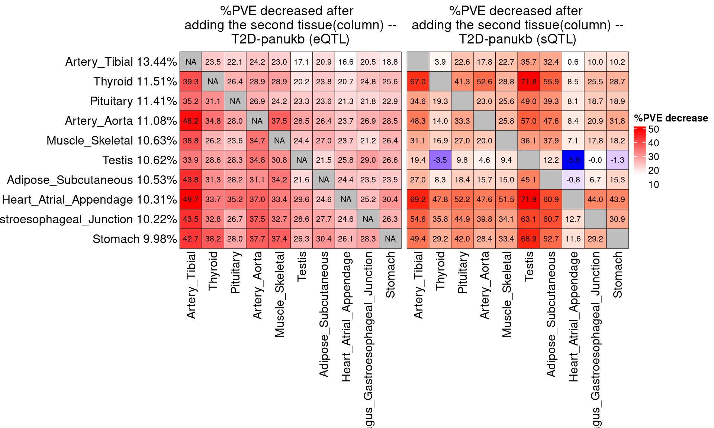
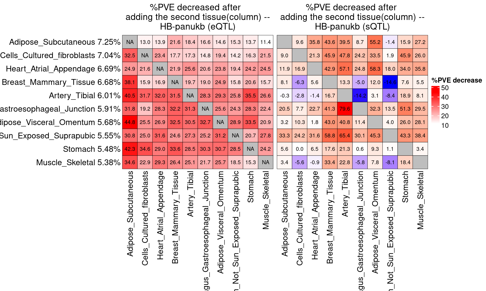
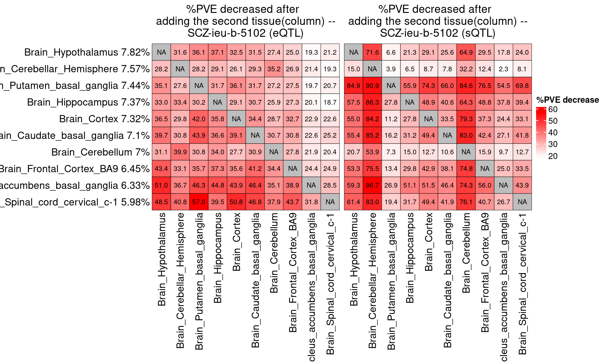
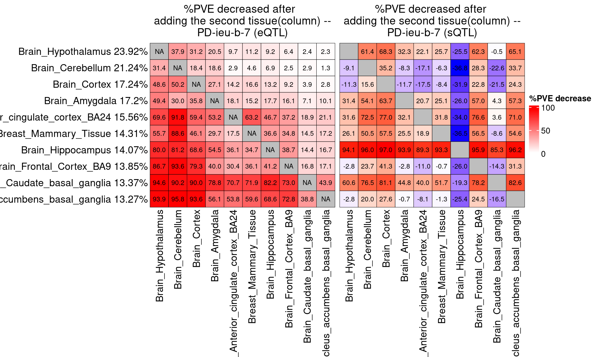
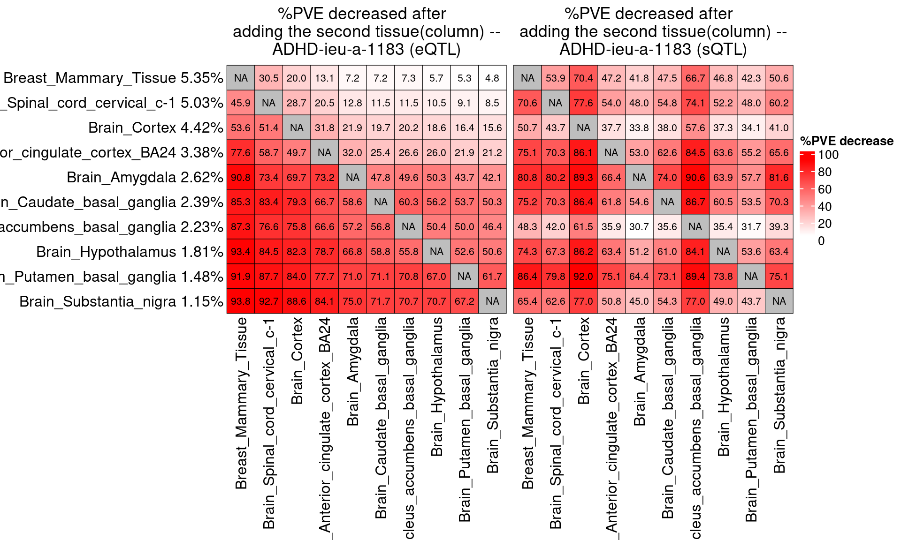

PVE share pattern, tissue ranked by PHE
XSun
2025-08-21
Last updated: 2025-08-22
Checks: 6 1
Knit directory: multigroup_ctwas_analysis/
This reproducible R Markdown analysis was created with workflowr (version 1.7.0). The Checks tab describes the reproducibility checks that were applied when the results were created. The Past versions tab lists the development history.
The R Markdown file has unstaged changes. To know which version of
the R Markdown file created these results, you’ll want to first commit
it to the Git repo. If you’re still working on the analysis, you can
ignore this warning. When you’re finished, you can run
wflow_publish to commit the R Markdown file and build the
HTML.
Great job! The global environment was empty. Objects defined in the global environment can affect the analysis in your R Markdown file in unknown ways. For reproduciblity it’s best to always run the code in an empty environment.
The command set.seed(20231112) was run prior to running
the code in the R Markdown file. Setting a seed ensures that any results
that rely on randomness, e.g. subsampling or permutations, are
reproducible.
Great job! Recording the operating system, R version, and package versions is critical for reproducibility.
Nice! There were no cached chunks for this analysis, so you can be confident that you successfully produced the results during this run.
Great job! Using relative paths to the files within your workflowr project makes it easier to run your code on other machines.
Great! You are using Git for version control. Tracking code development and connecting the code version to the results is critical for reproducibility.
The results in this page were generated with repository version a2b260d. See the Past versions tab to see a history of the changes made to the R Markdown and HTML files.
Note that you need to be careful to ensure that all relevant files for
the analysis have been committed to Git prior to generating the results
(you can use wflow_publish or
wflow_git_commit). workflowr only checks the R Markdown
file, but you know if there are other scripts or data files that it
depends on. Below is the status of the Git repository when the results
were generated:
Ignored files:
Ignored: .Rhistory
Ignored: cv/
Ignored: figures/lz/IBD-ebi-a-GCST004131/single/
Ignored: figures/lz_ld/IBD-ebi-a-GCST004131/single/
Unstaged changes:
Modified: analysis/realdata_final_PVE_share_pattern_rankPHE.Rmd
Note that any generated files, e.g. HTML, png, CSS, etc., are not included in this status report because it is ok for generated content to have uncommitted changes.
These are the previous versions of the repository in which changes were
made to the R Markdown
(analysis/realdata_final_PVE_share_pattern_rankPHE.Rmd) and
HTML (docs/realdata_final_PVE_share_pattern_rankPHE.html)
files. If you’ve configured a remote Git repository (see
?wflow_git_remote), click on the hyperlinks in the table
below to view the files as they were in that past version.
| File | Version | Author | Date | Message |
|---|---|---|---|---|
| Rmd | fef2c96 | XSun | 2025-08-22 | update |
| html | fef2c96 | XSun | 2025-08-22 | update |
| Rmd | 8996a4d | XSun | 2025-08-21 | update |
| Rmd | 13195f6 | XSun | 2025-08-21 | update |
| html | 13195f6 | XSun | 2025-08-21 | update |
Introduction
We ranked tissues by the PHE in single-tissue eQTL analyses and selected the top 10.
From the 10 selected tissues, we obtained 45 unique tissue pairs. For each pair, we
For each tissue pair \((A, B)\), we first estimated the PHE of tissue \(A\) when analyzed alone (in single-tissue eQTL/sQTL analysis), and then conducted both two-tissue eQTL and two-tissue sQTL analyses to estimate the PHE of each tissue in the joint analysis.
For tissue A, \[\text{PHE}_{\text{single}}\] is the PHE from single tissue analysis, \[\text{PHE}_{\text{joint}}\] is the PHE from 2 tissue joint analysis, we then calculated the relative change as:
\[ \frac{\text{PHE}_{\text{single}} - \text{PHE}_{\text{joint}}}{\text{PHE}_{\text{single}}} \]
library(ctwas)
library(ComplexHeatmap)
library(grid)
library(circlize)
trait_nopsy <- c("LDL-ukb-d-30780_irnt","IBD-ebi-a-GCST004131","aFib-ebi-a-GCST006414","SBP-ukb-a-360",
"T1D-GCST90014023","T2D-panukb","ATH_gtexukb","BMI-panukb","HB-panukb",
"Height-panukb","HTN-panukb","PLT-panukb","RA-panukb","RBC-panukb",
"WBC-ieu-b-30"
)
trait_psy <- c("SCZ-ieu-b-5102","BIP-ieu-b-5110","MDD-ieu-b-102","PD-ieu-b-7",
"NS-ukb-a-230","ASD-ieu-a-1185","ADHD-ieu-a-1183")
traits <- c(trait_nopsy,trait_psy)
#
#traits <- c("LDL-ukb-d-30780_irnt","IBD-ebi-a-GCST004131","SCZ-ieu-b-5102")
source("/project/xinhe/xsun/multi_group_ctwas/data/samplesize.R")
get_top_tissues <- function(trait, n_top = 10, folder_results) {
# Find files matching pattern
finalfiles <- list.files(folder_results, pattern = "_csinclude")
# Collect tissue summaries
trait_sum <- do.call(rbind, lapply(finalfiles, function(file) {
gene_pip <- readRDS(file.path(folder_results, file))
tissue <- gsub(pattern = paste0(trait, "_"), replacement = "", x = file)
tissue <- gsub(pattern = ".combined_pip_bygroup_final_csinclude.RDS", replacement = "", x = tissue)
data.frame(tissue = tissue,
num_gene_pip08 = sum(gene_pip$combined_pip > 0.8),
stringsAsFactors = FALSE)
}))
# Filter, order, and select top tissues
# trait_sum <- trait_sum[trait_sum$num_gene_pip08 > 0, ]
trait_sum <- trait_sum[order(trait_sum$num_gene_pip08, decreasing = TRUE), ]
# Return top tissues
head(trait_sum$tissue, n_top)
}
get_top_tissues_phe <- function(trait, n_top = 10, folder_results, gwas_n) {
# Find files matching pattern
finalfiles <- list.files(folder_results, pattern = "param.RDS")
# Collect tissue summaries
trait_sum <- do.call(rbind, lapply(finalfiles, function(file) {
param_single <- readRDS(file.path(folder_results, file))
ctwas_parameters_single <- summarize_param(param_single, gwas_n, enrichment_test = "fisher")
phe <- ctwas_parameters_single$prop_heritability[1]
tissue <- gsub(pattern = paste0(trait, "_"), replacement = "", x = file)
tissue <- gsub(pattern = ".thin1.shared_all.param.RDS", replacement = "", x = tissue)
data.frame(tissue = tissue,
PHE_single_eQTL = phe,
stringsAsFactors = FALSE)
}))
# Order and select top tissues
trait_sum <- trait_sum[order(trait_sum$PHE_single_eQTL, decreasing = TRUE), ]
# Return top tissues
head(trait_sum$tissue, n_top)
}Tissue ranking
for (trait in traits){
print(trait)
gwas_n <- samplesize[trait]
folder_results <- paste0("/project/xinhe/xsun/multi_group_ctwas/22.singlegroup_0515/ctwas_output/expression/",trait,"/")
top_tissues <- get_top_tissues(
trait = trait,
n_top = 10,
folder_results = folder_results
)
top_tissues_phe <- get_top_tissues_phe(trait,
n_top = 10,
folder_results,
gwas_n)
tissues <- cbind( top_tissues, top_tissues_phe)
colnames(tissues) <- c("by gene number", "by PHE")
tissues <- as.data.frame(tissues)
print(tissues)
}[1] "LDL-ukb-d-30780_irnt"
by gene number by PHE
1 Liver Liver
2 Esophagus_Mucosa Lung
3 Esophagus_Gastroesophageal_Junction Whole_Blood
4 Spleen Esophagus_Mucosa
5 Whole_Blood Esophagus_Gastroesophageal_Junction
6 Adipose_Visceral_Omentum Spleen
7 Adipose_Subcutaneous Adipose_Subcutaneous
8 Artery_Tibial Esophagus_Muscularis
9 Breast_Mammary_Tissue Heart_Atrial_Appendage
10 Heart_Atrial_Appendage Skin_Not_Sun_Exposed_Suprapubic
[1] "IBD-ebi-a-GCST004131"
by gene number by PHE
1 Adipose_Subcutaneous Whole_Blood
2 Cells_Cultured_fibroblasts Skin_Not_Sun_Exposed_Suprapubic
3 Esophagus_Mucosa Cells_Cultured_fibroblasts
4 Pituitary Esophagus_Mucosa
5 Heart_Left_Ventricle Adipose_Subcutaneous
6 Testis Spleen
7 Colon_Sigmoid Pituitary
8 Esophagus_Muscularis Lung
9 Heart_Atrial_Appendage Small_Intestine_Terminal_Ileum
10 Muscle_Skeletal Heart_Left_Ventricle
[1] "aFib-ebi-a-GCST006414"
by gene number by PHE
1 Heart_Atrial_Appendage Heart_Atrial_Appendage
2 Heart_Left_Ventricle Heart_Left_Ventricle
3 Artery_Tibial Esophagus_Muscularis
4 Brain_Cerebellum Artery_Tibial
5 Cells_Cultured_fibroblasts Artery_Aorta
6 Esophagus_Muscularis Muscle_Skeletal
7 Artery_Aorta Thyroid
8 Brain_Cerebellar_Hemisphere Cells_Cultured_fibroblasts
9 Muscle_Skeletal Brain_Anterior_cingulate_cortex_BA24
10 Pituitary Skin_Sun_Exposed_Lower_leg
[1] "SBP-ukb-a-360"
by gene number by PHE
1 Artery_Tibial Artery_Aorta
2 Artery_Aorta Artery_Tibial
3 Muscle_Skeletal Muscle_Skeletal
4 Pancreas Spleen
5 Adrenal_Gland Adrenal_Gland
6 Spleen Skin_Sun_Exposed_Lower_leg
7 Adipose_Subcutaneous Thyroid
8 Adipose_Visceral_Omentum Heart_Atrial_Appendage
9 Colon_Sigmoid Brain_Cortex
10 Esophagus_Muscularis Minor_Salivary_Gland
[1] "T1D-GCST90014023"
by gene number by PHE
1 Adipose_Visceral_Omentum Whole_Blood
2 Artery_Aorta Lung
3 Artery_Tibial Cells_EBV-transformed_lymphocytes
4 Brain_Anterior_cingulate_cortex_BA24 Artery_Aorta
5 Pancreas Small_Intestine_Terminal_Ileum
6 Skin_Not_Sun_Exposed_Suprapubic Pancreas
7 Spleen Nerve_Tibial
8 Whole_Blood Skin_Sun_Exposed_Lower_leg
9 Adipose_Subcutaneous Esophagus_Gastroesophageal_Junction
10 Brain_Frontal_Cortex_BA9 Artery_Tibial
[1] "T2D-panukb"
by gene number by PHE
1 Adipose_Subcutaneous Artery_Tibial
2 Muscle_Skeletal Thyroid
3 Testis Pituitary
4 Artery_Aorta Artery_Aorta
5 Brain_Caudate_basal_ganglia Muscle_Skeletal
6 Brain_Cerebellum Testis
7 Heart_Atrial_Appendage Adipose_Subcutaneous
8 Pituitary Heart_Atrial_Appendage
9 Adipose_Visceral_Omentum Esophagus_Gastroesophageal_Junction
10 Artery_Tibial Stomach
[1] "ATH_gtexukb"
by gene number by PHE
1 Breast_Mammary_Tissue Spleen
2 Colon_Transverse Colon_Transverse
3 Heart_Left_Ventricle Lung
4 Spleen Esophagus_Muscularis
5 Esophagus_Muscularis Heart_Atrial_Appendage
6 Pancreas Heart_Left_Ventricle
7 Skin_Sun_Exposed_Lower_leg Artery_Tibial
8 Thyroid Pancreas
9 Adipose_Visceral_Omentum Esophagus_Gastroesophageal_Junction
10 Artery_Aorta Skin_Sun_Exposed_Lower_leg
[1] "BMI-panukb"
by gene number by PHE
1 Adipose_Subcutaneous Muscle_Skeletal
2 Brain_Cerebellum Brain_Cerebellum
3 Cells_Cultured_fibroblasts Cells_Cultured_fibroblasts
4 Artery_Tibial Artery_Tibial
5 Artery_Aorta Brain_Caudate_basal_ganglia
6 Muscle_Skeletal Adipose_Subcutaneous
7 Brain_Caudate_basal_ganglia Brain_Cortex
8 Brain_Cerebellar_Hemisphere Stomach
9 Testis Brain_Cerebellar_Hemisphere
10 Adipose_Visceral_Omentum Artery_Aorta
[1] "HB-panukb"
by gene number by PHE
1 Cells_Cultured_fibroblasts Adipose_Subcutaneous
2 Adipose_Subcutaneous Cells_Cultured_fibroblasts
3 Breast_Mammary_Tissue Heart_Atrial_Appendage
4 Adipose_Visceral_Omentum Breast_Mammary_Tissue
5 Artery_Tibial Artery_Tibial
6 Heart_Atrial_Appendage Esophagus_Gastroesophageal_Junction
7 Stomach Adipose_Visceral_Omentum
8 Esophagus_Gastroesophageal_Junction Skin_Not_Sun_Exposed_Suprapubic
9 Whole_Blood Stomach
10 Skin_Not_Sun_Exposed_Suprapubic Muscle_Skeletal
[1] "Height-panukb"
by gene number by PHE
1 Cells_Cultured_fibroblasts Ovary
2 Artery_Tibial Cells_Cultured_fibroblasts
3 Pituitary Adipose_Visceral_Omentum
4 Adipose_Visceral_Omentum Artery_Tibial
5 Stomach Prostate
6 Adipose_Subcutaneous Heart_Left_Ventricle
7 Skin_Not_Sun_Exposed_Suprapubic Heart_Atrial_Appendage
8 Artery_Aorta Skin_Not_Sun_Exposed_Suprapubic
9 Ovary Whole_Blood
10 Skin_Sun_Exposed_Lower_leg Artery_Aorta
[1] "HTN-panukb"
by gene number by PHE
1 Thyroid Adipose_Visceral_Omentum
2 Heart_Atrial_Appendage Adipose_Subcutaneous
3 Nerve_Tibial Heart_Atrial_Appendage
4 Skin_Sun_Exposed_Lower_leg Testis
5 Stomach Skin_Not_Sun_Exposed_Suprapubic
6 Testis Lung
7 Artery_Tibial Muscle_Skeletal
8 Heart_Left_Ventricle Esophagus_Muscularis
9 Spleen Skin_Sun_Exposed_Lower_leg
10 Adipose_Subcutaneous Stomach
[1] "PLT-panukb"
by gene number by PHE
1 Lung Spleen
2 Spleen Whole_Blood
3 Thyroid Lung
4 Whole_Blood Small_Intestine_Terminal_Ileum
5 Adipose_Subcutaneous Thyroid
6 Breast_Mammary_Tissue Esophagus_Mucosa
7 Esophagus_Mucosa Breast_Mammary_Tissue
8 Colon_Transverse Adipose_Subcutaneous
9 Skin_Sun_Exposed_Lower_leg Skin_Not_Sun_Exposed_Suprapubic
10 Colon_Sigmoid Ovary
[1] "RA-panukb"
by gene number by PHE
1 Heart_Atrial_Appendage Lung
2 Lung Whole_Blood
3 Skin_Not_Sun_Exposed_Suprapubic Artery_Aorta
4 Spleen Spleen
5 Brain_Anterior_cingulate_cortex_BA24 Nerve_Tibial
6 Esophagus_Muscularis Heart_Atrial_Appendage
7 Muscle_Skeletal Esophagus_Muscularis
8 Nerve_Tibial Skin_Not_Sun_Exposed_Suprapubic
9 Pituitary Adipose_Subcutaneous
10 Small_Intestine_Terminal_Ileum Small_Intestine_Terminal_Ileum
[1] "RBC-panukb"
by gene number by PHE
1 Adipose_Subcutaneous Adipose_Subcutaneous
2 Cells_Cultured_fibroblasts Esophagus_Muscularis
3 Whole_Blood Breast_Mammary_Tissue
4 Brain_Cerebellum Colon_Sigmoid
5 Colon_Sigmoid Skin_Not_Sun_Exposed_Suprapubic
6 Skin_Not_Sun_Exposed_Suprapubic Whole_Blood
7 Thyroid Adipose_Visceral_Omentum
8 Skin_Sun_Exposed_Lower_leg Skin_Sun_Exposed_Lower_leg
9 Artery_Tibial Lung
10 Esophagus_Muscularis Thyroid
[1] "WBC-ieu-b-30"
by gene number by PHE
1 Whole_Blood Whole_Blood
2 Adipose_Subcutaneous Cells_Cultured_fibroblasts
3 Nerve_Tibial Lung
4 Lung Skin_Not_Sun_Exposed_Suprapubic
5 Breast_Mammary_Tissue Nerve_Tibial
6 Adipose_Visceral_Omentum Adipose_Subcutaneous
7 Spleen Artery_Tibial
8 Skin_Not_Sun_Exposed_Suprapubic Spleen
9 Artery_Aorta Skin_Sun_Exposed_Lower_leg
10 Artery_Tibial Artery_Aorta
[1] "SCZ-ieu-b-5102"
by gene number by PHE
1 Brain_Cerebellar_Hemisphere Brain_Hypothalamus
2 Brain_Cerebellum Brain_Cerebellar_Hemisphere
3 Brain_Cortex Brain_Putamen_basal_ganglia
4 Brain_Hypothalamus Brain_Hippocampus
5 Brain_Spinal_cord_cervical_c-1 Brain_Cortex
6 Brain_Hippocampus Brain_Caudate_basal_ganglia
7 Brain_Nucleus_accumbens_basal_ganglia Brain_Cerebellum
8 Brain_Putamen_basal_ganglia Brain_Frontal_Cortex_BA9
9 Brain_Substantia_nigra Brain_Nucleus_accumbens_basal_ganglia
10 Brain_Amygdala Brain_Spinal_cord_cervical_c-1
[1] "BIP-ieu-b-5110"
by gene number by PHE
1 Brain_Caudate_basal_ganglia Breast_Mammary_Tissue
2 Brain_Cerebellar_Hemisphere Brain_Caudate_basal_ganglia
3 Brain_Cortex Brain_Hypothalamus
4 Brain_Hippocampus Brain_Nucleus_accumbens_basal_ganglia
5 Brain_Hypothalamus Brain_Cerebellar_Hemisphere
6 Brain_Nucleus_accumbens_basal_ganglia Brain_Frontal_Cortex_BA9
7 Brain_Putamen_basal_ganglia Brain_Putamen_basal_ganglia
8 Brain_Cerebellum Brain_Cortex
9 Brain_Frontal_Cortex_BA9 Brain_Cerebellum
10 Brain_Spinal_cord_cervical_c-1 Brain_Substantia_nigra
[1] "MDD-ieu-b-102"
by gene number by PHE
1 Brain_Caudate_basal_ganglia Brain_Nucleus_accumbens_basal_ganglia
2 Brain_Hippocampus Breast_Mammary_Tissue
3 Brain_Amygdala Brain_Caudate_basal_ganglia
4 Brain_Anterior_cingulate_cortex_BA24 Brain_Cerebellum
5 Brain_Cerebellar_Hemisphere Brain_Hippocampus
6 Brain_Cerebellum Brain_Frontal_Cortex_BA9
7 Brain_Cortex Brain_Cortex
8 Brain_Frontal_Cortex_BA9 Brain_Putamen_basal_ganglia
9 Brain_Hypothalamus Brain_Anterior_cingulate_cortex_BA24
10 Brain_Nucleus_accumbens_basal_ganglia Brain_Cerebellar_Hemisphere
[1] "PD-ieu-b-7"
by gene number by PHE
1 Brain_Hypothalamus Brain_Hypothalamus
2 Brain_Amygdala Brain_Cerebellum
3 Brain_Cerebellum Brain_Cortex
4 Brain_Cortex Brain_Amygdala
5 Brain_Frontal_Cortex_BA9 Brain_Anterior_cingulate_cortex_BA24
6 Brain_Putamen_basal_ganglia Breast_Mammary_Tissue
7 Brain_Anterior_cingulate_cortex_BA24 Brain_Hippocampus
8 Brain_Cerebellar_Hemisphere Brain_Frontal_Cortex_BA9
9 Brain_Hippocampus Brain_Caudate_basal_ganglia
10 Brain_Nucleus_accumbens_basal_ganglia Brain_Nucleus_accumbens_basal_ganglia
[1] "NS-ukb-a-230"
by gene number by PHE
1 Brain_Cerebellar_Hemisphere Brain_Cortex
2 Brain_Caudate_basal_ganglia Brain_Cerebellar_Hemisphere
3 Brain_Cerebellum Brain_Caudate_basal_ganglia
4 Brain_Cortex Brain_Nucleus_accumbens_basal_ganglia
5 Brain_Hypothalamus Brain_Frontal_Cortex_BA9
6 Brain_Frontal_Cortex_BA9 Brain_Cerebellum
7 Brain_Putamen_basal_ganglia Brain_Substantia_nigra
8 Brain_Substantia_nigra Brain_Hypothalamus
9 Brain_Nucleus_accumbens_basal_ganglia Brain_Putamen_basal_ganglia
10 Brain_Spinal_cord_cervical_c-1 Breast_Mammary_Tissue
[1] "ASD-ieu-a-1185"
by gene number by PHE
1 Brain_Amygdala Brain_Frontal_Cortex_BA9
2 Brain_Anterior_cingulate_cortex_BA24 Brain_Cerebellum
3 Brain_Caudate_basal_ganglia Brain_Hypothalamus
4 Brain_Cerebellar_Hemisphere Brain_Caudate_basal_ganglia
5 Brain_Cerebellum Brain_Cerebellar_Hemisphere
6 Brain_Cortex Brain_Hippocampus
7 Brain_Frontal_Cortex_BA9 Brain_Putamen_basal_ganglia
8 Brain_Hippocampus Brain_Substantia_nigra
9 Brain_Hypothalamus Brain_Cortex
10 Brain_Nucleus_accumbens_basal_ganglia Breast_Mammary_Tissue
[1] "ADHD-ieu-a-1183"
by gene number by PHE
1 Brain_Amygdala Breast_Mammary_Tissue
2 Brain_Anterior_cingulate_cortex_BA24 Brain_Spinal_cord_cervical_c-1
3 Brain_Caudate_basal_ganglia Brain_Cortex
4 Brain_Cerebellar_Hemisphere Brain_Anterior_cingulate_cortex_BA24
5 Brain_Cerebellum Brain_Amygdala
6 Brain_Cortex Brain_Caudate_basal_ganglia
7 Brain_Frontal_Cortex_BA9 Brain_Nucleus_accumbens_basal_ganglia
8 Brain_Hippocampus Brain_Hypothalamus
9 Brain_Hypothalamus Brain_Putamen_basal_ganglia
10 Brain_Nucleus_accumbens_basal_ganglia Brain_Substantia_nigraResults
#trait <- "LDL-ukb-d-30780_irnt"
for (trait in traits){
print(trait)
gwas_n <- samplesize[trait]
folder_results <- paste0("/project/xinhe/xsun/multi_group_ctwas/22.singlegroup_0515/ctwas_output/expression/",trait,"/")
top_tissues_phe <- get_top_tissues_phe(trait,
n_top = 10,
folder_results,
gwas_n)
## single tissue eQTL
prob_pve_alltissue <- c()
for (tissue in top_tissues_phe){
file_param_single <- paste0(folder_results,"/",trait,"_",tissue,".thin1.shared_all.param.RDS")
param_single <- readRDS(file_param_single)
ctwas_parameters_single <- summarize_param(param_single, gwas_n, enrichment_test = "fisher")
prob_pve <- ctwas_parameters_single$prop_heritability[1]
prob_pve_alltissue <- c(prob_pve_alltissue, prob_pve)
}
names(prob_pve_alltissue) <- gsub(pattern = "\\|eQTL",x = names(prob_pve_alltissue), replacement = "")
## pairwise
tissue_combination <- combn(top_tissues_phe, 2, simplify = FALSE)
mat <- matrix(NA, nrow = length(top_tissues_phe), ncol = length(top_tissues_phe),
dimnames = list(top_tissues_phe, top_tissues_phe))
for (i in 1:length(tissue_combination)){
tissue1 <- tissue_combination[[i]][1]
pve_tissue1 <- prob_pve_alltissue[tissue1]
tissue2 <- tissue_combination[[i]][2]
pve_tissue2 <- prob_pve_alltissue[tissue2]
tissue_pair <- paste0(tissue_combination[[i]], collapse = "-")
file_param_pair <- paste0("/project/xinhe/xsun/multi_group_ctwas/23.multi_group_0515/pairwise_snakemake_outputs_byPHE/",trait,"/",trait,".",tissue_pair,".eqtlonly.thin1.shared_all.param.RDS")
param_pair <- readRDS(file_param_pair)
ctwas_parameters_pair <- summarize_param(param_pair, gwas_n, enrichment_test = "fisher")
pve_tissue1_joint <- ctwas_parameters_pair$prop_heritability[paste0(tissue1,"|eQTL")]
pve_tissue2_joint <- ctwas_parameters_pair$prop_heritability[paste0(tissue2,"|eQTL")]
pct_pve_shared_tissue1 <- (pve_tissue1 - pve_tissue1_joint)/pve_tissue1 * 100
pct_pve_shared_tissue2 <- (pve_tissue2 - pve_tissue2_joint)/pve_tissue2 * 100
mat[tissue1, tissue2] <- pct_pve_shared_tissue1
mat[tissue2, tissue1] <- pct_pve_shared_tissue2
}
prob_pve_alltissue <- prob_pve_alltissue[rownames(mat)]
prob_pve_alltissue <- round(prob_pve_alltissue*100,digits = 2)
if (any(mat < 0, na.rm = TRUE)) {
mat_range <- range(mat, na.rm = TRUE) # includes negatives
# create diverging color function
col_fun <- colorRamp2(
c(mat_range[1], 0, mat_range[2]), # min (neg), 0, max (pos)
c("blue", "white", "red") # colors
)
rownames(mat) <- paste0(rownames(mat)," ",prob_pve_alltissue,"%")
ht1 <- Heatmap(mat,
name = "%PVE decrease",
cluster_rows = FALSE,
cluster_columns = FALSE,
col = col_fun,
row_names_side = "left",
column_title = paste0("%PVE decreased after \n adding the second tissue(column) -- \n", trait," (eQTL)"),
rect_gp = gpar(col = "black", lwd = 0.5),
cell_fun = function(j, i, x, y, width, height, fill) {
if (!is.na(mat[i, j])) {
grid.text(sprintf("%.1f", mat[i, j]), x, y, gp = gpar(fontsize = 8))
}
})
}else{
rownames(mat) <- paste0(rownames(mat)," ",prob_pve_alltissue,"%")
ht1 <- Heatmap(mat,
name = "%PVE decrease",
cluster_rows = FALSE,
cluster_columns = FALSE,
col = colorRampPalette(c("white", "red"))(100),
row_names_side = "left", # can also be "right"
column_title = paste0("%PVE decreased after \n adding the second tissue(column) -- \n", trait," (eQTL)"),
rect_gp = gpar(col = "black", lwd = 0.5), # draw grid lines
cell_fun = function(j, i, x, y, width, height, fill) {
grid.text(sprintf("%.1f", mat[i, j]), x, y, gp = gpar(fontsize = 8))
})
}
## single tissue sQTL
folder_results <- paste0("/project/xinhe/xsun/multi_group_ctwas/22.singlegroup_0515/ctwas_output/splicing/",trait,"/")
prob_pve_alltissue <- c()
for (tissue in top_tissues_phe){
file_param_single <- paste0(folder_results,"/",trait,"_",tissue,".thin1.shared_all.param.RDS")
param_single <- readRDS(file_param_single)
ctwas_parameters_single <- summarize_param(param_single, gwas_n, enrichment_test = "fisher")
prob_pve <- ctwas_parameters_single$prop_heritability[1]
prob_pve_alltissue <- c(prob_pve_alltissue, prob_pve)
}
names(prob_pve_alltissue) <- gsub(pattern = "\\|sQTL",x = names(prob_pve_alltissue), replacement = "")
mat <- matrix(NA, nrow = length(top_tissues_phe), ncol = length(top_tissues_phe),
dimnames = list(top_tissues_phe, top_tissues_phe))
for (i in 1:length(tissue_combination)){
tissue1 <- tissue_combination[[i]][1]
pve_tissue1 <- prob_pve_alltissue[tissue1]
tissue2 <- tissue_combination[[i]][2]
pve_tissue2 <- prob_pve_alltissue[tissue2]
tissue_pair <- paste0(tissue_combination[[i]], collapse = "-")
file_param_pair <- paste0("/project/xinhe/xsun/multi_group_ctwas/23.multi_group_0515/pairwise_snakemake_outputs_byPHE/",trait,"/",trait,".",tissue_pair,".sqtlonly.thin1.shared_all.param.RDS")
param_pair <- readRDS(file_param_pair)
ctwas_parameters_pair <- summarize_param(param_pair, gwas_n, enrichment_test = "fisher")
pve_tissue1_joint <- ctwas_parameters_pair$prop_heritability[paste0(tissue1,"|sQTL")]
pve_tissue2_joint <- ctwas_parameters_pair$prop_heritability[paste0(tissue2,"|sQTL")]
pct_pve_shared_tissue1 <- (pve_tissue1 - pve_tissue1_joint)/pve_tissue1 * 100
pct_pve_shared_tissue2 <- (pve_tissue2 - pve_tissue2_joint)/pve_tissue2 * 100
mat[tissue1, tissue2] <- pct_pve_shared_tissue1
mat[tissue2, tissue1] <- pct_pve_shared_tissue2
}
prob_pve_alltissue <- prob_pve_alltissue[rownames(mat)]
prob_pve_alltissue <- round(prob_pve_alltissue*100,digits = 2)
if (any(mat < 0, na.rm = TRUE)) {
mat_range <- range(mat, na.rm = TRUE) # includes negatives
# create diverging color function
col_fun <- colorRamp2(
c(mat_range[1], 0, mat_range[2]), # min (neg), 0, max (pos)
c("blue", "white", "red") # colors
)
rownames(mat) <- paste0(rownames(mat)," ",prob_pve_alltissue,"%")
ht2 <- Heatmap(mat,
name = "%PVE decrease",
cluster_rows = FALSE,
cluster_columns = FALSE,
col = col_fun,
row_names_side = "left",
column_title = paste0("%PVE decreased after \n adding the second tissue(column) -- \n", trait," (sQTL)"),
rect_gp = gpar(col = "black", lwd = 0.5),
cell_fun = function(j, i, x, y, width, height, fill) {
if (!is.na(mat[i, j])) {
grid.text(sprintf("%.1f", mat[i, j]), x, y, gp = gpar(fontsize = 8))
}
})
}else{
rownames(mat) <- paste0(rownames(mat)," ",prob_pve_alltissue,"%")
ht2 <- Heatmap(mat,
name = "%PVE decrease",
cluster_rows = FALSE,
cluster_columns = FALSE,
col = colorRampPalette(c("white", "red"))(100),
row_names_side = "left", # can also be "right"
column_title = paste0("%PVE decreased after \n adding the second tissue(column) -- \n", trait," (sQTL)"),
rect_gp = gpar(col = "black", lwd = 0.5), # draw grid lines
cell_fun = function(j, i, x, y, width, height, fill) {
grid.text(sprintf("%.1f", mat[i, j]), x, y, gp = gpar(fontsize = 8))
})
}
draw(ht1 + ht2)
}[1] "LDL-ukb-d-30780_irnt"
| Version | Author | Date |
|---|---|---|
| fef2c96 | XSun | 2025-08-22 |
[1] "IBD-ebi-a-GCST004131"
| Version | Author | Date |
|---|---|---|
| fef2c96 | XSun | 2025-08-22 |
[1] "aFib-ebi-a-GCST006414"
| Version | Author | Date |
|---|---|---|
| fef2c96 | XSun | 2025-08-22 |
[1] "SBP-ukb-a-360"
| Version | Author | Date |
|---|---|---|
| fef2c96 | XSun | 2025-08-22 |
[1] "T1D-GCST90014023"
| Version | Author | Date |
|---|---|---|
| fef2c96 | XSun | 2025-08-22 |
[1] "T2D-panukb"
| Version | Author | Date |
|---|---|---|
| fef2c96 | XSun | 2025-08-22 |
[1] "ATH_gtexukb"
| Version | Author | Date |
|---|---|---|
| fef2c96 | XSun | 2025-08-22 |
[1] "BMI-panukb"
| Version | Author | Date |
|---|---|---|
| fef2c96 | XSun | 2025-08-22 |
[1] "HB-panukb"
| Version | Author | Date |
|---|---|---|
| fef2c96 | XSun | 2025-08-22 |
[1] "Height-panukb"
| Version | Author | Date |
|---|---|---|
| fef2c96 | XSun | 2025-08-22 |
[1] "HTN-panukb"
| Version | Author | Date |
|---|---|---|
| fef2c96 | XSun | 2025-08-22 |
[1] "PLT-panukb"
| Version | Author | Date |
|---|---|---|
| fef2c96 | XSun | 2025-08-22 |
[1] "RA-panukb"
| Version | Author | Date |
|---|---|---|
| fef2c96 | XSun | 2025-08-22 |
[1] "RBC-panukb"
| Version | Author | Date |
|---|---|---|
| fef2c96 | XSun | 2025-08-22 |
[1] "WBC-ieu-b-30"
| Version | Author | Date |
|---|---|---|
| fef2c96 | XSun | 2025-08-22 |
[1] "SCZ-ieu-b-5102"
| Version | Author | Date |
|---|---|---|
| fef2c96 | XSun | 2025-08-22 |
[1] "BIP-ieu-b-5110"
| Version | Author | Date |
|---|---|---|
| fef2c96 | XSun | 2025-08-22 |
[1] "MDD-ieu-b-102"
| Version | Author | Date |
|---|---|---|
| fef2c96 | XSun | 2025-08-22 |
[1] "PD-ieu-b-7"
| Version | Author | Date |
|---|---|---|
| fef2c96 | XSun | 2025-08-22 |
[1] "NS-ukb-a-230"
| Version | Author | Date |
|---|---|---|
| fef2c96 | XSun | 2025-08-22 |
[1] "ASD-ieu-a-1185"
| Version | Author | Date |
|---|---|---|
| fef2c96 | XSun | 2025-08-22 |
[1] "ADHD-ieu-a-1183"
| Version | Author | Date |
|---|---|---|
| fef2c96 | XSun | 2025-08-22 |
sessionInfo()R version 4.2.0 (2022-04-22)
Platform: x86_64-pc-linux-gnu (64-bit)
Running under: CentOS Linux 7 (Core)
Matrix products: default
BLAS/LAPACK: /software/openblas-0.3.13-el7-x86_64/lib/libopenblas_haswellp-r0.3.13.so
locale:
[1] C
attached base packages:
[1] grid stats graphics grDevices utils datasets methods
[8] base
other attached packages:
[1] circlize_0.4.15 ComplexHeatmap_2.12.0 ctwas_0.5.32
loaded via a namespace (and not attached):
[1] colorspace_2.0-3 rjson_0.2.21
[3] ellipsis_0.3.2 rprojroot_2.0.3
[5] XVector_0.36.0 locuszoomr_0.2.1
[7] GlobalOptions_0.1.2 GenomicRanges_1.48.0
[9] base64enc_0.1-3 fs_1.5.2
[11] clue_0.3-61 rstudioapi_0.13
[13] ggrepel_0.9.1 bit64_4.0.5
[15] AnnotationDbi_1.58.0 fansi_1.0.3
[17] xml2_1.3.3 codetools_0.2-18
[19] logging_0.10-108 doParallel_1.0.17
[21] cachem_1.0.6 knitr_1.39
[23] jsonlite_1.8.0 workflowr_1.7.0
[25] Rsamtools_2.12.0 cluster_2.1.3
[27] dbplyr_2.1.1 png_0.1-7
[29] readr_2.1.2 compiler_4.2.0
[31] httr_1.4.3 assertthat_0.2.1
[33] Matrix_1.5-3 fastmap_1.1.0
[35] lazyeval_0.2.2 cli_3.6.1
[37] later_1.3.0 htmltools_0.5.2
[39] prettyunits_1.1.1 tools_4.2.0
[41] gtable_0.3.0 glue_1.6.2
[43] GenomeInfoDbData_1.2.8 dplyr_1.1.4
[45] rappdirs_0.3.3 Rcpp_1.0.12
[47] Biobase_2.56.0 jquerylib_0.1.4
[49] vctrs_0.6.5 Biostrings_2.64.0
[51] rtracklayer_1.56.0 iterators_1.0.14
[53] xfun_0.41 stringr_1.5.1
[55] irlba_2.3.5 lifecycle_1.0.4
[57] restfulr_0.0.14 ensembldb_2.20.2
[59] XML_3.99-0.14 zlibbioc_1.42.0
[61] zoo_1.8-10 scales_1.3.0
[63] gggrid_0.2-0 hms_1.1.1
[65] promises_1.2.0.1 MatrixGenerics_1.8.0
[67] ProtGenerics_1.28.0 parallel_4.2.0
[69] SummarizedExperiment_1.26.1 RColorBrewer_1.1-3
[71] AnnotationFilter_1.20.0 LDlinkR_1.2.3
[73] yaml_2.3.5 curl_4.3.2
[75] memoise_2.0.1 ggplot2_3.5.1
[77] sass_0.4.1 biomaRt_2.54.1
[79] stringi_1.7.6 RSQLite_2.3.1
[81] highr_0.9 S4Vectors_0.34.0
[83] BiocIO_1.6.0 foreach_1.5.2
[85] GenomicFeatures_1.48.3 BiocGenerics_0.42.0
[87] filelock_1.0.2 BiocParallel_1.30.3
[89] shape_1.4.6 repr_1.1.4
[91] GenomeInfoDb_1.39.9 rlang_1.1.2
[93] pkgconfig_2.0.3 matrixStats_0.62.0
[95] bitops_1.0-7 evaluate_0.15
[97] lattice_0.20-45 purrr_1.0.2
[99] GenomicAlignments_1.32.0 htmlwidgets_1.5.4
[101] cowplot_1.1.1 bit_4.0.4
[103] tidyselect_1.2.0 magrittr_2.0.3
[105] AMR_2.1.1 R6_2.5.1
[107] IRanges_2.30.0 generics_0.1.2
[109] DelayedArray_0.22.0 DBI_1.2.2
[111] pgenlibr_0.3.3 pillar_1.9.0
[113] whisker_0.4 mixsqp_0.3-43
[115] KEGGREST_1.36.3 RCurl_1.98-1.7
[117] tibble_3.2.1 crayon_1.5.1
[119] utf8_1.2.2 BiocFileCache_2.4.0
[121] plotly_4.10.0 tzdb_0.4.0
[123] rmarkdown_2.25 GetoptLong_1.0.5
[125] progress_1.2.2 data.table_1.14.2
[127] blob_1.2.3 git2r_0.30.1
[129] digest_0.6.29 tidyr_1.3.0
[131] httpuv_1.6.5 stats4_4.2.0
[133] munsell_0.5.0 viridisLite_0.4.0
[135] skimr_2.1.4 bslib_0.3.1